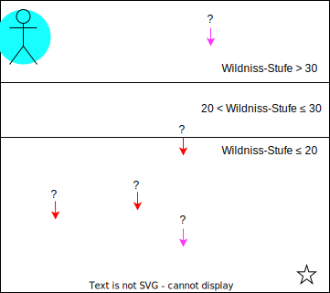
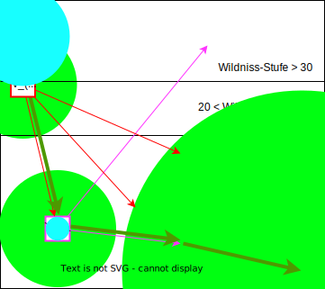
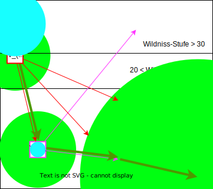
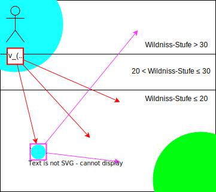
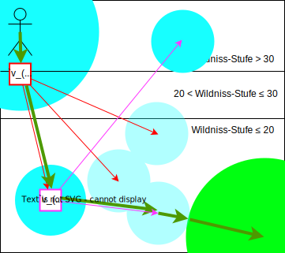

Effiziente kürzeste Wege Algorithmen
zur Pfadermittlung in der Videospielwelt
von
Old School RuneScape
Oliver Zeidler
Fachhochschule Dortmund
Bewegung in OSRS
Live Demo
- Karte und Positionen
- Laufen und Gehen
- Teleportationen und die Wildniss
- Transportwege
Karte


Positionen

Gehen
Laufen
Laufen (ungerade)
Teleportieren
Teleportieren in Wildniss
Transportwege
Transportwege
Gehen

Laufen


Wildniss


Zusammenfassung
- Gehschritt: 1 Position pro Zyklus
- Laufschritt: 2 Positionen pro Zyklus
- 179 Teleportationen
- Feste Zielposition
- Außerhalb Wildniss überall einsetzbar
- 27 bis Wildniss-Stufe 30
152 bis Wildniss-Stufe 20 - 4.946 Transportwege: Punkt-zu-Punkt Verbindungen
Pfade

Anforderungen Pfadermittlung
- Ausschluss bestimmter Telep./Transp.
- Effiziente Pfadermittlung (<100ms)
- Keine überschüssige Diagonalschritte
- Pfade sind optimal
- Teleportationen in Wildniss
- Lauf- und Gehschritte
Umsetzung als Graphenproblem
Modellierung


Kostenfunktion
$\lceil \frac{1}{2} + \frac{1}{2} + \frac{1}{2} \rceil + 3 + \lceil \frac{1}{2} + \frac{1}{2} + \frac{1}{2} \rceil = 7$

$(1 + 1) + 3 + (1 + 1) = 7$
Teleportationsursprünge


Suchverfahren
Suchverfahren
| Algorithmus | Datenstruktur | Kantentyp |
|---|---|---|
| Dijkstra Dijkstra-Backwards |
PriorityQueue BucketQueue ArrayQueue |
gewichtet |
| BFS BFS-Backwards BFS-MeetInMiddle BFS-MeetAtTeleport |
UnweightedQueue | ungewichtet |
Dijkstra



Dijkstra-Backwards


 

PriorityQueue

BucketQueue

ArrayQueue

Ungewichteter Graph


BFS
Ungewichtetes Analog zu Dijkstra
BFS-Backwards
Ungewichtetes Analog zu Dijkstra-Backwards
BFS-MeetInMiddle
Abgesuchte Fläche


BFS-MeetInMiddle
Funktionsweise


BFS-MeetInMiddle
Warum ungewichtet?

BFS-MeetInMiddle
Vergleich Dijkstra-Backwards
BFS-MeetAtTeleport
Effiziente Vorwärts-/Rückwärtssuchen


BFS-MeetAtTeleport
Funktionsweise


UnweightedQueue
Besonderheit der Kostenfunktion
Neue Kante erhöht Pfadkosten um 0,5 oder 1
UnweightedQueue

Tests
Verfahren und Ziel
- Durchschnitts-Berechenzeit < 100ms
- Testen zufälliger Eingaben
- Ausgewählte Testfälle < 100ms